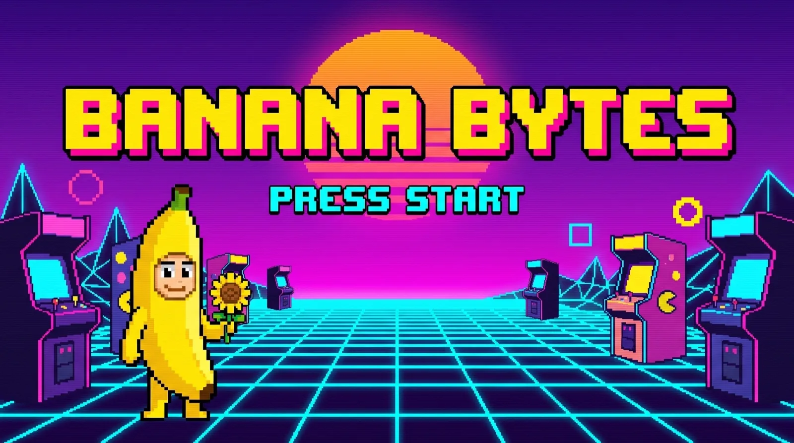
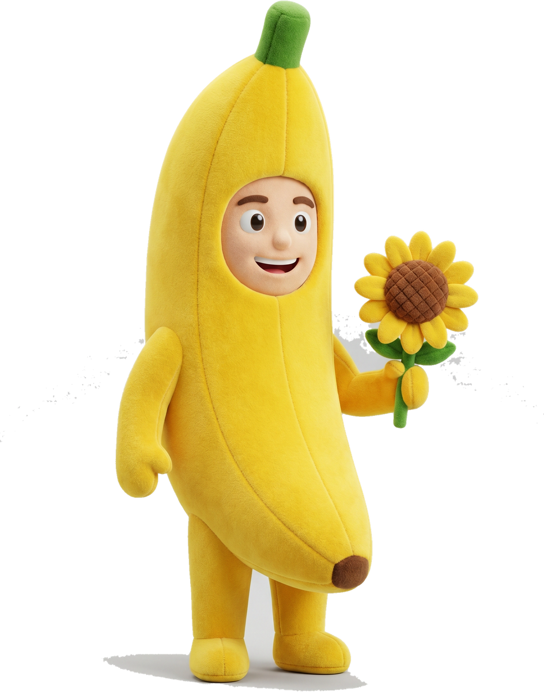

BANANA BYTES · INSERT COIN
SELECT A VIBE
Four takes on my link page — same Zack, four moods. Tap one to play. Banana Bytes · I build websites in minutes.
▶ PRESS START

01ARCADE
ENTER ▶Insert-coin maximalism. CRT cabinet, scanlines, and the mascot alive on screen.
Pro-Max · retro-arcade

02GLASS BYTES
ENTER ▶Frosted, iridescent, premium. A glass card that tilts to your cursor with a live status + clock.
Pro-Max · liquid glass
 03
3D · spin me
03
3D · spin me
BANANA / 3D
ENTER ▶Dark spatial gallery. My 2D sprite turned into a real 3D model that spins as you scroll.
Frontend-FX · 3D-on-scroll
04
now live
LIVING SYNTH
ENTER ▶Synthwave sunset, parallax depth, and the mascot alive in a glowing neon portal.
Frontend-FX · living parallax
— OR JUST SAY HI —